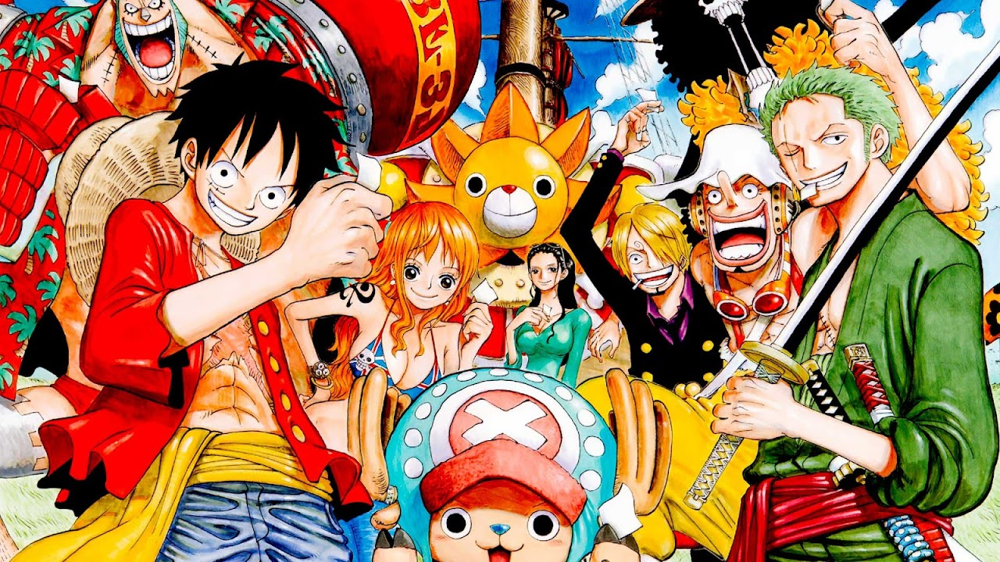

One Site: Todo sobre One Piece
¡Bienvenido a 'One Site'! Tu portal para explorar el emocionante mundo de 'One Piece'. Aquí encontrarás detalles de arcos, sobre el manga,etc.
Conoce MasDescubre One Site
One Site es tu destino confiable para conocer y disfrutar,únete a nuestra tripulación y sumérgete en el emocionante viaje de los Sombreros de Paja. ¡Zarpa con nosotros en esta gran aventura pirata!
Mas InformacionNoticias sobre One Piece

El tesoro del One Piece
Adéntrate en el mundo de Grand Line y sigue la búsqueda del legendario One Piece, un tesoro que cambiará el destino de todo aquel que lo encuentre. Revive momentos icónicos y descubre cómo Luffy y su tripulación enfrentan desafíos increíbles.
Mas Informacion